¿Falta un alumno?
Volver a AlumnosVamos paso a paso
Paso 2 de 4- Tu clase está abierta Canal 1, esperando alumnos en este equipo (192.168.1.20).
-
¿Qué dice la barra de arriba de Aula en el equipo del alumno?
Es la franja con el nombre «Aula» en la computadora que no aparece.
- Revisar la causa
- Comprobar que aparece
